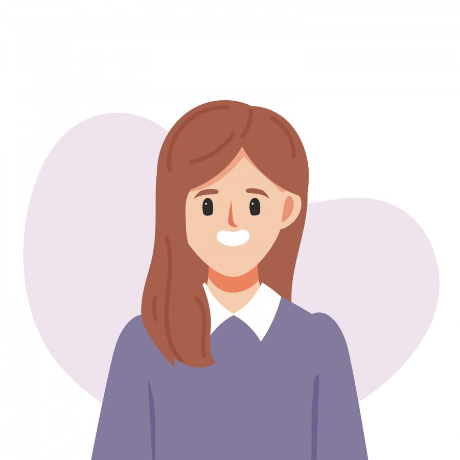

Календарь показывает март. За окном действительно больше света, птицы суетятся, солнце иногда даже выглядывает, и все вокруг будто бы сговорились: «Весна пришла, пора просыпаться, обновляться, радоваться». А внутри - тишина. Не плохо, не больно, а просто... никак. Пустота без цвета и вкуса.
Встаёшь, делаешь, улыбаешься там, где положено. А вечером ловишь себя на мысли: я сегодня вроде была, но меня не было. Будто кто-то другой прожил этот день, а ты только наблюдала со стороны. И тут же включается внутренний голос: «Что со мной не так? Почему весна, а я не чувствую радости? Почему у всех силы, а я как выжатый лимон?».
Если это про вас - давайте сразу, с порога: с вами всё так. Просто зима была длинная. Очень длинная. И вы всё это время держались, тянули, не жаловались, делали, что надо. А организм молча копил. А теперь копилка полна. И весна здесь совсем ни при чём.
Чем выгорание отличается от обычной усталости
Обычная усталость - она про «я много сделала». Выспалась - и ок. Погуляла - отпустило. На следующий день снова есть силы, снова хочется двигаться, планы снова кажутся интересными.
Выгорание - это когда отдых перестаёт помогать. Можно лежать сутками, уехать на выходные, проспать двенадцать часов - и проснуться с тем же ощущением разбитости. Потому что дело не в количестве дел, а в том, что система дала трещину. Вы так долго работали на износ, так долго не слышали себя, так долго игнорировали сигналы, что внутренний аккумулятор просто перестал держать заряд.
В марте это обостряется. Организм привык терпеть, он терпел всю зиму, а теперь говорит: «Всё, я больше не могу». И пугается сам: «Почему весна, а я не радуюсь? Почему обновление, а я хочу только лежать?».
7 признаков, что отдых уже не помогает
Проверьте себя. Чем больше совпадений, тем громче организм просит паузу и тем важнее перестать себя ругать и начать себя возвращать.
✅ Сон не восстанавливает. Просыпаетесь уже уставшей. Будто и не ложились. Утром тяжелее, чем вечером.
✅ Раздражение на пустом месте. Люди, звуки, вопросы, любые просьбы - всё бесит. Срываетесь там, где раньше спокойно улыбались и кивали.
✅ Пустота внутри. Не больно, не грустно, не тревожно. А просто никак. Чувства будто выключили звук. Вы есть, но вас нет.
✅ Не включаетесь в жизнь. Делаете всё механически. Присутствуете телом, а мыслями - в никуда. Новое не радует, планы не зажигают, будущее не манит.
✅ Всё через «надо». Даже то, что раньше любили. Хобби теперь как обязанность. Встречи с подругами - как пункт в списке. Прогулки - как «надо подышать».
✅ Память и внимание хуже. Теряете нить разговора, забываете, зачем зашли в комнату, зависаете над простыми задачами. Мозг будто в тумане, мысли вязкие, медленные.
✅ «Ничего не хочу». Раньше мечтали, ждали, хотели, строили планы. Теперь на вопрос «чего тебе хочется?» внутри тишина. Нет ответа. Даже маленького.
Если узнали себя в трёх-четырёх пунктах - организм уже на грани. Если в пяти-семи - вы живёте на резервах, которых почти не осталось.
Что с этим делать? Ничего сложного.
Самое важное сейчас - перестать требовать от себя весеннего настроения. Перестать догонять, успевать, быть для всех хорошей, соответствовать календарю. Можно не бежать за обновлением. Можно просто посидеть в этой пустоте, признать её: «Да, я вымоталась. Да, внутри пока тихо. Да, мне не до подвигов».
И сделать маленький шаг в сторону себя. Не глобальный, не героический, а совсем крошечный.
Практика «Три вдоха для себя»
Это не займёт больше трёх минут. Но именно такие микро-паузы постепенно возвращают нас из режима «автопилота» в режим «я здесь».
Первый шаг — остановиться.
Сядьте или встаньте устойчиво. Закройте глаза, если есть возможность. Положите руку туда, где чувствуете себя - на грудь, на живот, на плечо. Просто чтобы почувствовать тепло своей ладони. Это уже контакт.
Второй шаг — три вдоха, три вопроса.
С каждым вдохом спрашивайте себя мягко, без давления, без требования «правильно ответить».
🌿 Первый вдох - «Что я сейчас чувствую?»
Не оценивайте. Просто отметьте: тяжесть, пустоту, холод, тепло, напряжение, дрожь. Как есть. Без «плохо» и «хорошо».
🌿 Второй вдох - «Чего мне хочется прямо сейчас?»
Маленького. Очень конкретного. Попить воды? Вытянуть ноги? Закрыть глаза на минуту? Снять носки? Отодвинуть телефон?
🌿 Третий вдох - «Что мне сейчас подойдёт?»
Не «надо», не «правильно», не «так принято». А именно подойдёт. Побыть в тишине? Отложить несделанное? Завернуться в плед? Сказать кому-то «нет»?
Третий шаг — сделайте это.
Если получилось что-то услышать - сделайте. Прямо сейчас. Даже самое маленькое действие в сторону себя возвращает ощущение, что вы у себя есть. Что вы не функция, не исполнитель, не «хорошая девочка», а живой человек, у которого есть потребности, и они важны.
Напоследок
Напоминайте себе почаще: цель жизни вовсе не в том, чтобы выполнить всё намеченное, соответствовать всем ожиданиям и быть неустанной. А в том, чтобы быть в контакте с собой на каждом шагу. Даже на медленном. Даже на уставшем. Даже на том, где вы просто сидите и смотрите в окно, никуда не бежите и ничего не делаете.
Март пришёл. А силы появятся. Но не потому, что вы себя заставите, а потому, что вы себе позволите - отдохнуть, не догонять, не быть для всех. И в этой паузе, в этой пустоте, в этом «ничего не хочу» - на самом деле зреет то, чему потом будет место. Настоящее, ваше, живое.
Просто подождите себя.
Статья подготовлена на основе материалов психологической практики. Если тема откликнулась, вы можете связаться со мной для обсуждения возможности индивидуальной работы.
Статья опубликована на b17.ru.